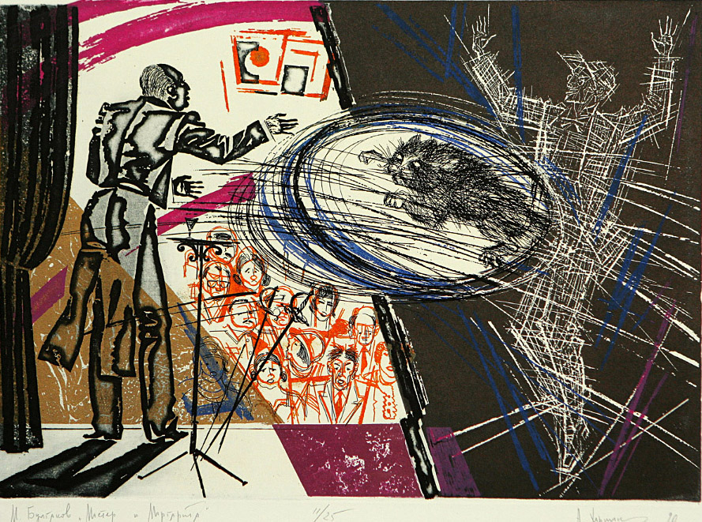

Краткое изложение
Мы можем выделить несколько сюжетных линий, каждая из которых развивается самостоятельно. Действие первой разворачивается в Москве в течение нескольких майских дней в 30-х гг. XX века, действие же второй происходит тоже в мае, но в городе Ершалаиме почти две тысячи лет тому назад — в самом начале новой эры. Роман построен таким образом, что главы основной сюжетной линии перемежаются главами, составляющими вторую сюжетную линию, причём эти вставные главы являются то главами из романа мастера, то рассказом очевидца событий Воланда.
В один из жарких майских дней в Москве появляется некто Воланд, выдающий себя за специалиста по чёрной магии, а на самом деле являющийся сатаной. Его сопровождает странная свита: хорошенькая ведьма-вампир Гелла, развязный тип Коровьев, также известный как Фагот, мрачный и зловещий Азазелло и весёлый толстяк Бегемот, который по большей части предстаёт перед читателем в обличье чёрного кота невероятных размеров.
Первыми встречаются с Воландом редактор художественного журнала Михаил Александрович Берлиоз и поэт Иван Бездомный, написавший антирелигиозную поэму об Иисусе Христе. Воланд вмешивается в их разговор, утверждая, что Христос существовал в действительности. В качестве доказательства того, что есть нечто, неподвластное человеку, Воланд предсказывает, что Берлиозу отрежет голову русская девушка. На глазах потрясённого Ивана Берлиоз попадает под трамвай, которым управляет девушка, и ему отрезает голову. Иван безуспешно пытается преследовать Воланда, а затем, явившись в Массолит, так запутанно излагает последовательность событий, что его отвозят в психиатрическую клинику профессора Стравинского, где он и встречает главного героя романа — мастера.
Воланд, явившись в квартиру № 50 дома 302-бис по Садовой улице, которую покойный Берлиоз занимал вместе с директором театра Варьете Степаном Лиходеевым, и найдя последнего в состоянии тяжкого похмелья, предъявляет ему подписанный им же, Лиходеевым, контракт на выступление Воланда в театре, а затем выпроваживает его прочь из квартиры, и Стёпа оказывается в Ялте. Никанор Иванович Босой, является в квартиру № 50 и застаёт там Коровьева, который просит сдать эту квартиру Воланду, так как Берлиоз погиб, а Лиходеев в Ялте. Никанор после долгих уговоров соглашается и получает от Коровьева сверх платы, обусловленной договором, 400 рублей, которые прячет. В тот же день к Никанору приходят с ордером на арест за хранение валюты, так как эти рубли превратились в доллары. Ошеломлённый Никанор попадает в ту же клинику профессора Стравинского.
В это время финдиректор Варьете Римский и администратор Варенуха безуспешно пытаются разыскать по телефону исчезнувшего Лиходеева и недоумевают, получая от него одну за другой телеграммы из Ялты с просьбой выслать денег и подтвердить его личность. Вечером на сцене театра Варьете начинается представление с участием великого мага Воланда и его свиты. Фагот выстрелом из пистолета вызывает в театре денежный дождь, и весь зал ловит падающие червонцы. Затем на сцене открывается «дамский магазин», где любая женщина из числа сидящих в зале может бесплатно одеться с ног до головы. Тут же в магазин выстраивается очередь, однако по окончании представления червонцы превращаются в бумажки, а всё, приобретённое в «дамском магазине», исчезает, заставив женщин метаться по улицам в одном белье.
Иван Бездомный, познакомившись с Мастером, рассказывает ему о том, как он встретился со странным иностранцем, погубившим Мишу Берлиоза. Мастер объясняет Ивану, что встретился он на Патриарших с сатаной, и рассказывает Ивану о себе. Мастером его называла его возлюбленная Маргарита. Он оставил работу в музее, снял две комнаты в подвале домика в одном из арбатских переулков и начал писать роман о Понтии Пилате. Роман уже был почти закончен, когда он случайно встретил на улице Маргариту, и любовь поразила их обоих мгновенно. Каждый день она приходила к мастеру. Роман близился к концу, и они были счастливы. Наконец роман был дописан, и мастер отнёс его в журнал, но напечатать его там отказались. Отрывок из романа был напечатан, вскоре в газетах появилось несколько разгромных статей о романе. И тут мастер почувствовал, что заболевает. Однажды ночью он бросил роман в печь, но прибежавшая встревоженная Маргарита выхватила из огня последнюю пачку листов.
В это утро Маргарита просыпается с ощущением, что что-то должно произойти. Утирая слёзы, отправляется на прогулку в Александровский сад. К ней подсаживается Азазелло и сообщает ей, что знатный иностранец приглашает её в гости. Маргарита принимает приглашение, потому что надеется узнать хоть что-то о Мастере. Вечером того же дня Маргарита, раздевшись донага, натирает тело кремом, который дал ей Азазелло, становится невидимой и вылетает в окно. Воланд просит Маргариту быть королевой на его балу. В награду он обещает исполнить её желание. Воланд спрашивает у Маргариты, что она хочет, и Маргарита просит вернуть ей мастера. Тут же появляется мастер в больничном одеянии, и Маргарита, посовещавшись с ним, просит Воланда вернуть их в маленький домик на Арбате, где они были счастливы.
Во дворце Ирода Великого прокуратор Иудеи Понтий Пилат допрашивает арестованного Иешуа Га-Ноцри, которому Синедрион вынес смертный приговор за оскорбление власти кесаря, и приговор этот направлен на утверждение к Пилату. Допрашивая арестованного, Пилат понимает, что перед ним не разбойник, подстрекавший народ к неповиновению, а бродячий философ, проповедующий царство истины и справедливости. Однако римский прокуратор не может отпустить человека, которого обвиняют в преступлении против кесаря, и утверждает смертный приговор. Палач закалывает измученных осуждённых, и на гору обрушивается внезапный ливень. Прокуратор вызывает Афрания, начальника своей тайной службы, и поручает ему убить Иуду из Кириафа, получившего деньги от Синедриона за то, что позволил в своём доме арестовать Иешуа Га-Ноцри. Через некоторое время Афраний докладывает Пилату о том, что Иуда зарезан, а мешок с деньгами — подброшен в дом первосвященника. К Пилату приводят Левия Матвея, который показывает прокуратору пергамент с записанными им проповедями Га-Ноцри. «Самый тяжкий порок — трусость», — читает прокуратор.
Но вернёмся в Москву. На закате солнца на террасе одного из московских зданий прощаются с городом Воланд и его свита. Внезапно появляется Левий Матвей, который предлагает Воланду взять мастера к себе и наградить его покоем. «А что же вы не берёте его к себе, в свет?» — спрашивает Воланд. «Он не заслужил света, он заслужил покой», — отвечает Левий Матвей. Через некоторое время, в домик к Маргарите и мастеру является Азазелло и приносит бутылку вина — подарок Воланда. Выпив вина, мастер и Маргарита падают без чувств; в то же мгновение начинается суматоха в доме скорби: скончался пациент из комнаты № 118; и в ту же минуту в особняке на Арбате молодая женщина внезапно бледнеет, схватившись за сердце, и падает на пол.
Волшебные чёрные кони уносят Воланда, его свиту, Маргариту и Мастера. «Ваш роман прочитали, — говорит Воланд Мастеру, — и я хотел бы показать вам вашего героя. Около двух тысяч лет сидит он на этой площадке и видит во сне лунную дорогу и хочет идти по ней и разговаривать с бродячим философом. Вы можете теперь кончить роман одной фразой». «Свободен! Он ждёт тебя!» — кричит мастер, и над чёрной бездной загорается необъятный город с садом, к которому протянулась лунная дорога, и по дороге этой стремительно бежит прокуратор. «Прощайте!» — кричит Воланд; Маргарита и мастер идут по мосту через ручей, и Маргарита говорит: «Вот твой вечный дом, вечером к тебе придут те, кого ты любишь, а ночью я буду беречь твой сон».
А в Москве, после того как Воланд покинул её, ещё долго продолжается следствие по делу о преступной шайке, однако меры, принятые к её поимке, результатов не дают. Опытные психиатры приходят к выводу, что члены шайки являлись невиданной силы гипнотизёрами. Проходит несколько лет, события тех майских дней начинают забываться, и только профессор Иван Николаевич Понырев, бывший поэт Бездомный, каждый год, лишь только наступает весеннее праздничное полнолуние, появляется на Патриарших прудах и садится на ту же скамейку, где впервые встретился с Воландом, а затем, пройдя по Арбату, возвращается домой и видит один и тот же сон, в котором к нему приходят и Маргарита, и мастер, и Иешуа Га-Ноцри, и жестокий пятый прокуратор Иудеи всадник Понтий Пилат.